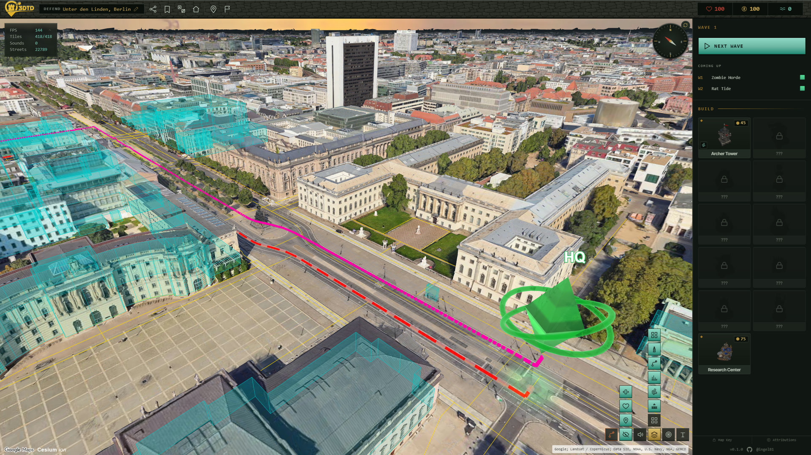

Routes follow real streets
The street graph comes from OpenStreetMap, the thin yellow lines above. Ground enemies get the red route along those streets, flyers the magenta one straight across. Every waypoint of the ground route is raycast down onto the tile surface for its height, so it follows the actual terrain.